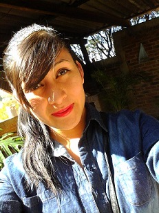
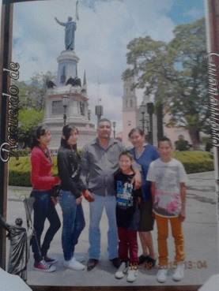

Sofia Lopez Galvan
My photo

My Biography
I was born in comonfort Guanajuato on September 18, 1996
I am the first daughter.
My mother's name is Gloria and my father Alvaro, I have 2 brothers and
one sister we are a small but very family unit.

Currently I have 19 years. and I am studying college in Dolores Hidalgo.
I am studying computer systems, it is a little difficult but not impossible race
My goals in life are as follows:
My personal and professional goals are to:
- Personally:
- finish my career in computer systems
- be more sociable with people
- More control my feelings
- Professional:
- Publish my opion point and say what I think
- be recognized
- have a title
☺ My attributes y skills
☼ some of my skills and attributes are:
- be patient
- listening to people
- understand them
- compassionate with others
- Quick understand things
☺ My Hobbies
My favorite hobby I love to do are:
- Listen to music of all kinds is something I like to dor
- I love to dance, and more with my dad
- learn to play the guitar
- My favorite pastime is spending time with my family, hanging out with them some bussling
- other hobbies is doing homework ☺ although I do not like much
If I was Wealthy
if I were rich, founded one company to ever leave deserlo,
In addition to buying a lot of clothes and shoes.
I would also like to make a foundation for seniors, and help them.
If I were rich if I would visit the most beautiful places in the world with my whole family.
I would go on a cruise with my sister to anywhere in the world
If I were independent
Lenvataria me what time I wanted.
You could go anywhere without permission,
would have to make eating.
I would buy the things I want
could make party or go to parties without permission
Visted
| place would visit |
place that never visit |
Alaska
I would like to place vistar is Alaska.
Because I think a beautiful place where I would like to go with my family.
I think a beautiful place, I would like to walk at night and watch the snow with lights
|
United States The place I like to visit is not United States perhaps is a beautiful place,
but ma ami not make an attractive place, ami I like simple places, without much noise where you can rest more
|
How to Contact Me
|
Phone |
In persom |
| Sofía |
461 197 69 25 |
Comonfort Gto.
Ignacio Street, # 15B |
Please visit my blog.
Sofi Lopez
{kind=link}
{kind=link}